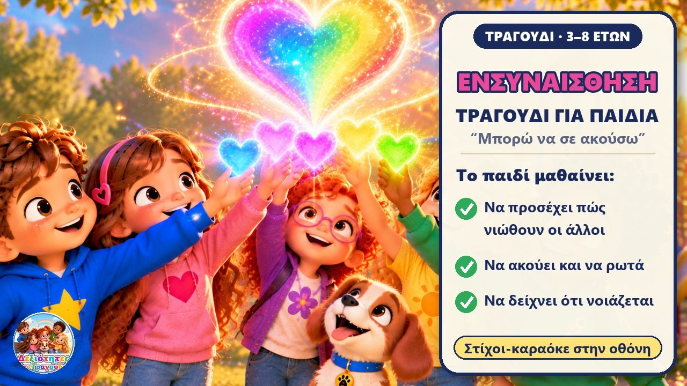

Μπορώ να σε ακούσω
Ένα τρυφερό τραγούδι για την ενσυναίσθηση! 💗 Τραγουδήστε με τον Μαξ, τη Μία, τον Τζέι, τη Λίλη, τη Ρόζα και τον σκυλάκο Μπάντι, που μαθαίνουν ότι δεν χρειάζεται να ξέρουμε ακριβώς πώς νιώθει ένας φίλος — μπορούμε όμως να τον ακούσουμε και να μείνουμε δίπλα του.
Το «Μπορώ να σε ακούσω» είναι ένα τραγούδι για παιδιά που διδάσκει ενσυναίσθηση και φροντίδα: να προσέχουμε όταν ένας φίλος είναι λυπημένος, θυμωμένος ή ανήσυχος, να ρωτάμε «Πώς αισθάνεσαι εσύ;» και να ακούμε την απάντηση με όλη μας την προσοχή. Γιατί όταν νοιαζόμαστε, ερχόμαστε πιο κοντά. Με μεγάλους στίχους-καραόκε στην οθόνη, ιδανικό για παιδιά 3–8 ετών, στο σπίτι, στο νηπιαγωγείο, στο δημοτικό και στα Εργαστήρια Δεξιοτήτων.

▶💡 Γιατί είναι σημαντικό: Ενσυναίσθηση
Η ενσυναίσθηση — να καταλαβαίνουμε πώς νιώθει ο άλλος — βρίσκεται στην καρδιά της φιλίας, της καλοσύνης και του σεβασμού. Είναι κάτι που καμία μηχανή δεν μπορεί πραγματικά να αντικαταστήσει, και μεγαλώνει με την εξάσκηση. Όταν διαβάζετε ένα παραμύθι ή βλέπετε ένα παιδικό, ρωτήστε: «Πώς λες να νιώθει; Τι θα τη βοηθούσε;»
👨👩👧 Τι μαθαίνει το παιδί
- Να προσέχει πώς νιώθουν οι άλλοι
- Να ρωτά «Πώς αισθάνεσαι;» και να ακούει με προσοχή
- Να δίνει χρόνο σε έναν θυμωμένο φίλο, χωρίς «μην κάνεις έτσι»
- Να μένει δίπλα σε κάποιον που ανησυχεί ή είναι λυπημένος
- Να χαίρεται με τη χαρά των φίλων του
💬 Κουβέντα μετά το τραγούδι
- Πώς καταλαβαίνεις ότι ένας φίλος σου είναι λυπημένος;
- Τι μπορείς να του πεις ή να κάνεις;
- Πότε κάποιος σε άκουσε και ένιωσες καλύτερα;
🏅 Κουίζ & Πτυχίο
Είδατε το τραγούδι μαζί; Τώρα διαβάστε στο παιδί κάθε ερώτηση — το παιδί δείχνει τη σωστή εικόνα. Αν απαντήσει και στις 6 ερωτήσεις, κερδίζει ένα πτυχίο για εκτύπωση!
🔒 Το όνομα χρησιμοποιείται μόνο για να φτιαχτεί το πτυχίο στη συσκευή σας. Δεν αποθηκεύουμε και δεν στέλνουμε τίποτα.
Τα κατάφερες! 🎉
Και οι 6 απαντήσεις είναι σωστές! Γράψτε το όνομα του παιδιού για να φτιαχτεί το πτυχίο.
🖨️ Δωρεάν εκτυπώσιμα
Δωρεάν για χρήση στο σπίτι και στην τάξη. Εκτυπώστε σε χαρτί Α4.
🖼️ Σκηνές από το τραγούδι


🎵 Κι άλλα τραγούδια


🎤 Στίχοι – Μπορώ να σε ακούσω
Βλέπω το πρόσωπό σου,
κάτι θέλει να μου πει.
Ίσως θέλεις έναν φίλο
να σταθεί εκεί μαζί.
Δεν χρειάζεται να ξέρω
ακριβώς πώς νιώθεις εσύ.
Μπορώ όμως να σε ακούσω
και να μείνω εκεί μαζί.
Βλέπω έναν φίλο μου
να κάθεται σιωπηλός.
Δεν γελάει όπως πριν,
μοιάζει λίγο λυπημένος.
Πάω ήρεμα κοντά του
και του λέω απαλά:
«Θέλεις να μου πεις τι έχεις;
Είμαι εδώ, αν θες, κοντά.»
Δεν χρειάζεται να λύσω
κάθε πρόβλημα εγώ.
Μερικές φορές αρκεί
να καθίσω και ν’ ακούσω.
Κοιτάζω,
ακούω,
ρωτάω με καρδιά.
Προσπαθώ να καταλάβω
τι αισθάνεσαι βαθιά.
Μπορώ να σε ακούσω,
μπορώ να νοιαστώ,
κι όταν με χρειάζεσαι,
δίπλα σου θα σταθώ.
Μπορώ να σε ρωτήσω:
«Πώς αισθάνεσαι εσύ;»
Και ν’ ακούσω την απάντηση
με όλη μου την προσοχή.
Άλλες σκέψεις,
άλλες καρδιές,
άλλες ιστορίες.
Μα όταν νοιαζόμαστε,
ερχόμαστε πιο κοντά!
Αν ένας φίλος μου θυμώσει,
δεν θα πω «μην κάνεις έτσι».
Θα του δώσω λίγο χρόνο
κι αν το θέλει, θα μιλήσει.
Κι αν μια φίλη ανησυχεί
για κάτι που θα συμβεί,
μπορώ απλά να τη ρωτήσω:
«Θες να μείνω εδώ μαζί;»
Κι όταν κάποιος έχει χαρά,
θα χαρώ κι εγώ μαζί!
Γιατί μοιραζόμαστε στιγμές,
όμορφες και δύσκολες πολύ.
Κοιτάζω,
ακούω,
ρωτάω με καρδιά.
Προσπαθώ να καταλάβω
τι αισθάνεσαι βαθιά.
Μπορώ να σε ακούσω,
μπορώ να νοιαστώ,
κι όταν με χρειάζεσαι,
δίπλα σου θα σταθώ.
Μπορώ να σε ρωτήσω:
«Πώς αισθάνεσαι εσύ;»
Και ν’ ακούσω την απάντηση
με όλη μου την προσοχή.
Άλλες σκέψεις,
άλλες καρδιές,
άλλες ιστορίες.
Μα όταν νοιαζόμαστε,
ερχόμαστε πιο κοντά!
Βλέπεις έναν φίλο λυπημένο;
ΤΟΝ ΠΡΟΣΕΧΩ!
Θέλει κάτι να σου πει;
ΤΟΝ ΑΚΟΥΩ!
Δεν ξέρεις πώς αισθάνεται;
ΤΟΝ ΡΩΤΑΩ!
Χρειάζεται έναν φίλο;
ΕΙΜΑΙ ΕΔΩ!
Μπορεί να νιώθεις αλλιώς,
μπορεί να νιώθω αλλιώς,
μα μπορώ να σε ακούσω
και να σου δείξω πως σε νοιάζομαι!
Δεν χρειάζεται να νιώθουμε
πάντα ακριβώς το ίδιο.
Μπορώ να δω,
μπορώ να ακούσω,
μπορώ να ρωτήσω,
μπορώ να νοιαστώ.
Και με μια μικρή καλή πράξη
να σου δείξω:
«Είμαι εδώ.»
Μπορώ να σε ακούσω,
μπορώ να νοιαστώ,
κι όταν με χρειάζεσαι,
δίπλα σου θα σταθώ.
Μπορώ να σε ρωτήσω:
«Πώς αισθάνεσαι εσύ;»
Και ν’ ακούσω την απάντηση
με όλη μου την προσοχή.
Άλλες σκέψεις,
άλλες καρδιές,
άλλες ιστορίες.
Μα η καλοσύνη μάς ενώνει
και μας φέρνει πιο κοντά!
Σε βλέπω!
Σε ακούω!
Σε ρωτάω!
Σε νοιάζομαι!
Κι αν χρειάζεσαι έναν φίλο,
είμαι εδώ κοντά!
Μπορεί να μη γνωρίζω
ακριβώς πώς νιώθεις εσύ.
Μα μπορώ να σε ακούσω...
και να μείνω εδώ μαζί.